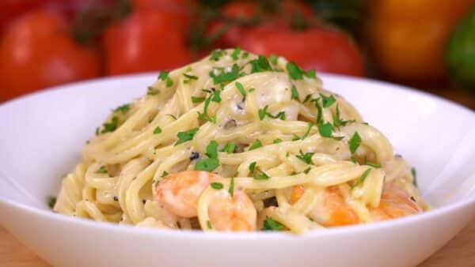

Espaguetis al pesto
Los espaguetis al pesto, consisten en esta popular pasta, preparada con esta salsa de color verde. La albahaca, es el ingrediente que tornará a nuestros espaguetis de este susodicho color. El pesto es una salsa para pastas con mucha personalidad. Tanto por el color como por el sabor. El ajo y el queso le darán un toque potente mientras que la albahaca, le dará un toque anisado. Los ingredientes para preparar los espaguetis al pesto son:
ingredientes:
- 400g de espaguetis
- 150g de hojas de albahaca. No incluyas el tallo, que amarga
- 300g de queso parmesano
- 2 dientes de ajo
- 100g de piñones
- 200ml de aceite de oliva
- Sal
Preparación
Como hacer Espaguetis al pesto:
- Cocemos los espagueti. Añadimos un puñadito de sal en una cazuela con abundante agua hirviendo. Después añadimos los espagueti y los removemos con frecuencia, especialmente los primeros minutos de la cocción. Para que no se peguen al fondo.
- Mientras se cuecen, preparamos la salsa pesto. En un vaso batidor ponemos la albahaca, el queso parmesano (u otro de tu gusto pero, mejor que sea curado. Con sabor), los dientes de ajo, los piñones, que puedes sustituirlos por nueces o almendras y el aceite de oliva. Lo batimos bien hasta que nos quede una salsa verde y bastante densa.
- Ponemos la salsa de los espaguetis al pesto en un bol grande. Y cuando los espaguetis estén al dente (tardarán unos 10 minutos de cocción), reservamos dos cucharones del caldo de la cocción. Unos 100ml. Y escurrimos los espaguetis del resto del agua
- Acto seguido, ponemos los espagueti en el bol donde habíamos puesto el pesto. Añadimos el caldo de la cocción, que darán a la salsa un toque más cremoso y sobre todo añadirá mucho sabor y con un tenedor mezclamos durante un par de minutos. Para que los espaguetis absorban bien toda la salsa.
Recetas relacionadas:

Pasta Alfredo con camarones
Recomendaciones